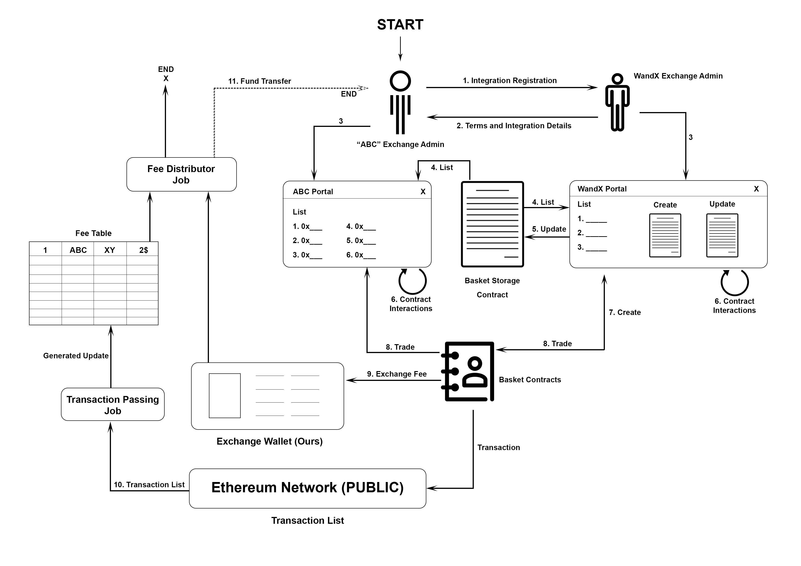

Basket Protocol Integration
Integration of the Basket protocol with Exchanges
 Above architecture describes the integration of the Basket protocol with exchanges.
The Basket protocol , created by the WandX team, enables users to create baskets of ERC20 Tokens and group them into a single unit which is stored on a smart contract. This document focuses on how exchanges can use the Basket protocol to offer Token Baskets to their customers.
- Initially, the exchange ( let's call it the ABC Exchange) needs to register with WandX and sign the needed documents. This can be done through an email interaction with abhinav.ramesh@wandx.co.
- After the agreement, the ABC Exchange will be a part of the Basket protocol.
- Whenever a User comes to the WandX platform and trades, they have the flexibility to create a Basket of tokens.
- Once the User create this basket, this basket is pushed onto the Basket Storage Contract. There is a two way communication between the Basket Storage Contract and the WandX platform, which means data gets updated every now and then on the Basket Storage Contract.
- As a part of this Basket protocol, the ABC Exchange has the flexibility to choose any of these Baskets from the Basket Storage Contract and trade these Baskets on their platform.
- Now users can come onto the ABC Exchange and purchase these Basket of tokens.
- Once the transaction is complete, the exchange profit fee goes to Exchange Wallet which is controlled by the WandX team.
- From this Exchange Wallet, exchange profit fee goes to Fee Distributor Contract which is owned by the WandX team, where the fee breaks down according to the Agreements signed between the ABC Exchange and Basket protocol and gets transferred to the ABC Exchange.
- All transactions happening during the process can be visible on Etherscan.
Step 1
ABC exchange sends an integration request to the Basket protocol.
Step 2
ABC Exchange will discuss and agree upon the terms and conditions related to the Basket protocol , with the WandX Team.
The following details should be shared and agreed upon:
- Fee split ratio
- Frequency at which fee transfers should happen between WandX Team and ABC Exchange
- ABC Exchange address on the Etherscan. (Fees will be transferred to this address)
- Storage Contract address (WandX team will share this)
- Basket contract ABI (WandX team will share this)
- Code to extract the list of active Baskets from the Storage (From the contract shared above)
- Code to execute or call, Basket buy or trade methods
Step 3
WandX Team will set up the ABC Exchange integration with the Basket protocol.
Step 4
After the integration with Basket protocol, the ABC Exchange can extract and display the list of Baskets on their Exchange using the code shared in step 2.
Step 5 ((only through the WandX platform))
The WandX Team can make Basket updates if any, and can push them onto the Basket Storage Contract.
New Baskets can be published as and when users create them on the WandX platform.
Step 6
Individual exchanges can build their own Basket interaction UI for all the methods like publish, update, cancel, buy, deposit, withdraw, buy. These methods are available for the Baskets that are created on WandX. The UI for these methods can be provided by WandX, and customized for each exchange.
The ABI as shared in Step 2 will have the mandatory details to build this UI and interactions, the code for which is available only for buy or trade method interactions.
Step 7 (new Basket creation)
New Baskets can only be created on the WandX platform.
Step 8
When a user tries to buy a Basket on an exchange, that exchange address (shared with the WandX Team in step 2) needs to be injected as a parameter into the Buy method. This address is mandatory to claim the Exchange trade fee. Refer the code shared in step 2.
Step 9
When a buy transaction on ABC Exchange is executed successfully, the calculated Fees will be transferred into the Exchange Wallet (WandX team controls the Exchange Wallet).
Step 10
When a buy transaction is executed successfully, the details like Basket ID, exchange address, trade fee will be available through events in the transaction. Anyone can go to etherscan and verify the transaction details and fee collection details.
A transaction parsing job will be running in the background which identifies and processes the Basket related transactions, extracts the fee related details and generates/updates the Fee Collection Table (WandX Team controls this and will be shared with other exchanges on need basis).
Step 11
Fee Distribution job will run on a weekly/monthly basis, and transferring of funds will happen as recorded in the fee table. Funds will be transferred to the Exchange account which has been shared in step 2.